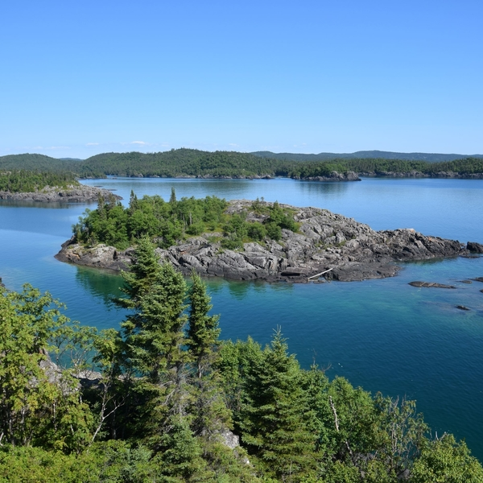
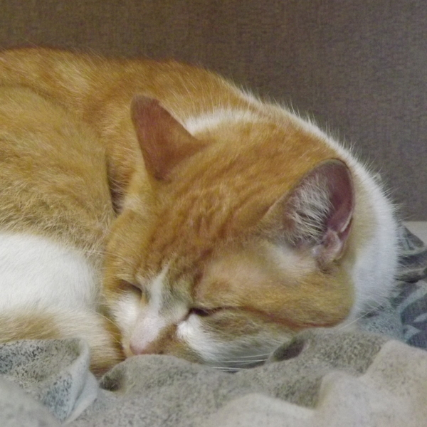
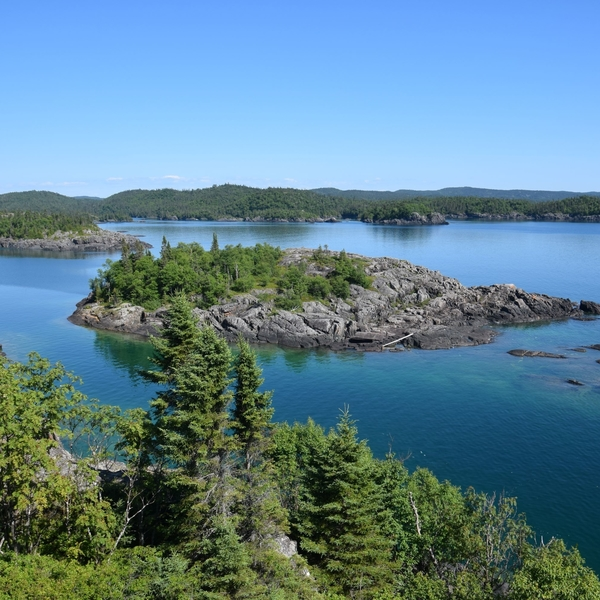
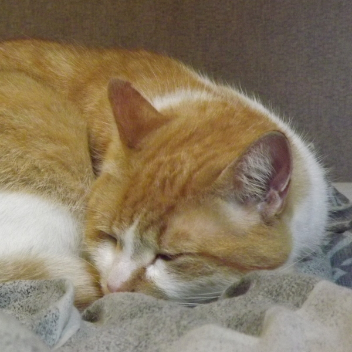

A very brief biography

Welcome! Bienvenue! 歡迎！ I was born and grew up in anglophone Ontario, but both my parents were French, so I grew up bilingual. Most of my childhood was spent with my nose in a book (more on that shortly), but not all my adventures were confined to the realm of imagination. Some of my fondest memories come from our frequent family trips, which took me to almost every single Canadian province (sorry, PEI!). Every few years, we'd also go back to France to visit our family there.
My adult life has been fairly adventurous, taking me to various places around Canada and the world. I did my undergraduate degrees in History and Economics at Brock University, where I was fortunate enough to get the chance to go on an underwater archaeological dig in Turkey. It turns out scuba diving is less magical when you're constantly enshrouded by a thick cloud of silt, but it was a hugely enriching experience.
Post-graduation I spent a summer working as a historic interpreter at the old Hat Creek roadhouse in British Columbia, which (thanks to its isolation) had to most enchanting night skies I've yet had the pleasure to sleep under. The next stage in my life began when I moved to Montreal to do my Masters degree in History at McGill. Montreal was the first major city I'd ever lived in, and it proved less disorienting than I'd feared. Though I did often miss the peaceful quiet of places like Hat Creek or my hometown, delicious food from Montreal's famed food markets offered some compensation (and there's always Mount Royal if you need an escape).
My biggest adventure of all was also the most recent one, when I took advantage of a scholarship program to move to Taiwan and learn Mandarin Chinese properly. Even though I theoretically knew enough Mandarin when I landed to navigate around basic things, actually putting that knowledge into practice was an entirely different challenge, without even accounting for cultural barriers. Fortunately, Taiwan is an amazingly hospitable country, and people will often go out of their way to help you out. Taipei itself was a very different kind of city compared to Montreal, but there I learned the wonders of world-class public transportation.
Finally, I love all animals equally, but cats are the most equal of all.
A longstanding love of books

Normally, parents celebrate if their child loves reading. Mine did too, until they started getting calls from teachers about me reading in class. Every day, the same struggle would play out between my teachers and I. They would notice me reading in class and confiscate my book, but I learned to come prepared and regularly brought multiple books to school. Needless to say, the teachers were not pleased.
My propensity to read when I was supposed to be doing other things aside, my parents, both readers themselves, did plenty to encourage me. My favourite genres have always been a blend of mythology, historical and fantasy books, but in early adolescence my dad began sharing his passion for science-fiction with me, and the likes of Arthur C. Clarke soon found a place on my bookshelves. High school also saw my reading repertoire expand to include manga, beginning with the classic series Fullmetal Alchemist by Hiromu Arakawa. Below you'll find a short collection of my favourite works and authors:
- As a child I loved the abridged version of Le Comte de Monte-Cristo by Alexandre Dumas, and returning to it as an adult and reading the original was a special pleasure.
- Pretty much everything written by Tamora Pierce, who wrote several of my favourite childhood fantasy series, such as Protector of the Small and The Circle of Magic. Best of all, her stories aren't the kind that you outgrow and remain a pleasure to re-read even now.
- Idem for Canadian author Guy Gavriel Kay, whose stories weave mundane (and not-so-mundane) characters into the rich tapestry of history. His novels bring to life some of history's most fascinating moments, such as the Byzantine empire under Justinian (The Sarantine Mosaic) or the Tang dynasty at its apogee just prior to the An Lushan rebellion (Under Heaven).
- In the realm of manga, one of my absolute favourites works is Kaoru Mori's vivid rendition of 19th century Central Asia in A Bride's Story. The artwork is breathtaking in its detail, and the clothes that the characters wear are to die for. So much gorgeous embroidery everywhere. Why don't we get clothes like that anymore?
- For some fantasy that's not your old sword & sorcery story, check out N.K. Jemisin, especially her Broken Earth trilogy. Her characters are all profoundly human, and we get to follow them through their messy lives and often banally human concerns, except with gods, powerful magic, and/or imminent apocalypses thrown into the mix. I'm doing a terrible job of doing her justice here, so just go read her books for yourself.
- And finally for a novel that I really hopes gets a translation someday: 獅頭花 by 陳耀昌 (Chen Yaochang), a historical novel from Taiwan. Set in southern Taiwan in 1875, the story recounts the challenges faced by the independent indigenous Tjakuvukuvulj confederation when both imperial Japan and the Qing dynasty in China were trying to expand their influence on the island. The historical incidents depicted in the novel do a great job of illustrating some of Taiwan's complex history, and offer good context to understand the island country's peculiar position today. I hope more people get to learn about Taiwan's complex colonial history.
The list could go on for much longer, but then it wouldn't be a short collection anymore.
An early start in the kitchen

My first introduction to cooking came for a simple reason: I wanted to make my favourite food, crêpes. Simple but time-consuming to make in large quantities, it was an excellent way to get started and help my mom out on holidays. Later on I'd get the chance to further polish my crêpe-making skills during visits to my grandmother in France, one of the few activities we could truly enjoy together.
For several years as a kid, I just stuck to occasionally making delicious crêpes, but that changed in high school when everyone else in my family became too busy to cook in the evenings. My parents had work and my sister had club activities, so I became the new family chef. Those were the years when I first discovered the many possibilities offered by using spices, and like most beginners I may have at times been overenthusiastic in sprinkling them into the dishes. Nonetheless, I learned how tasty a meal could be when I cooked it just the was I liked it. As an extremely picky eater, being able to cook for myself meant no longer being afraid of what I'd find hidden in the sauce.
Over the course of my adult years, I've been working on slowly expanding my culinary repertoire - more of a challenge than you'd think given the limitations of all the things I don't like. Crêpes still remain my signature dish, though, and that will likely never change.
Nature & the Outdoors
Despite being a bookworm at heart, generally quite content to spend days at a time in my room, I always enjoyed our frequent camping trips as a kid, not to mention growing up in the countryside. After reading about so many adventures, it was always nice to go on one of my own for a change. Many of those trips were to the celebrated Algonquin Provincial Park, though we also explored many others of Ontario's numerous provincial parks. We'd emerge from the coziness of our RV each morning to explore the park by hiking or biking its trails, or by canoeing its waterways, before ending each day with a campfire.
One year, I had a chance to go camping in a less luxurious fashion for a change. My best friend invited me to go backcountry camping with his family in Algonquin, at a campsite accessible only via many hours of portage and paddling. It was quite chilly, since this was during March break, but our sleeping bags were warm and cozy. During the days, we'd fish for our dinner - or try to! My friend and I didn't catch a single fish the whole week (I'd never fished before), but fortunately the others were better fishermen than us. The taste of fresh-caught wild fish grilled over a fire was a special delight to end each day with.
Over the years, I've had to good fortune to explore a few different landscapes. My favourite landscapes often share 3 elements: forests, bare rock, and water. The Canadian Shield in northern Ontario, mountainous BC and the snowy peaks of Hokkaido in northern Japan are all some my favourite landscapes that I've visited, and places like Iceland and Norway are right at the top of my travel list.
Most recently, after several years of life in the city, I've also started to appreciate urban green spaces more than I did before. Getting out of the noise and chaos of the busy streets and finding some peace and quiet (not to mention fresh air) in parks and gardens did wonders for my sanity in both Montreal and Taipei. Montreal's Botanical Garden and its collection of lilacs in particular were a special joy when I was writing my Masters research paper and spending whole weeks locked up in my room.
 


